| 日付 | 2026年1月25日（日） |
|---|---|
| 山域 | 房総 |
| メンバー | 単独 |
| 山行形態 | 日帰り |
| アクセス | 車 |
| ルート (Map) | 道の駅 保田小学校 (7:22) - (7:55) 小保田バス停 - (8:08) 嵯峨山登山口 - (8:23) 小保田峠 - (8:46) 嵯峨山 - (9:06) 小保田峠 - (9:51) チバンドキャニオン - (10:11) 小鋸山 - (10:42) 林道 - (11:14) 鋸山 (11:26) - (12:20) 十州一覧台 - (12:31) 地獄覗き - (12:44) 日本寺大仏 - (13:00) 仁王門 - (13:32) 道の駅 保田小学校 |
鋸山の東側に小鋸山という山があることを最近知った。
鋸山～小鋸山は一部登山道がない区間があるが、岩尾根の楽しい稜線のようだ。
今回、もう少し東にある嵯峨山から通して縦走してみることにする。
道の駅 保田小学校に車を停める。標高15m。
まだ朝早いのだが、車中泊と思われる車が多く停まっている。
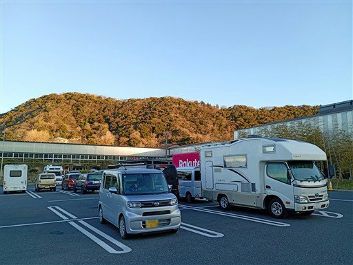
まずは嵯峨山登山口に向かう。しばらくは車道歩きだ。
車通りが多く、途中で歩道が無くなるので、ちょっと歩きづらい道だ。
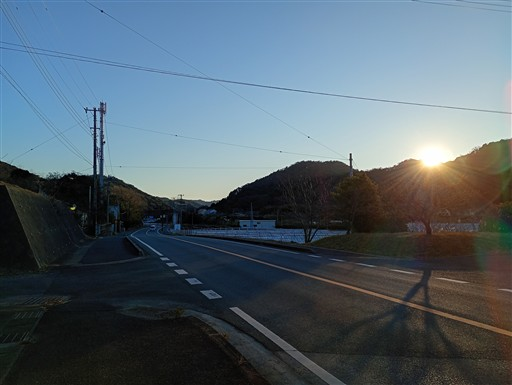
側の川は表面が凍っているように見える。かなり気温が低い。
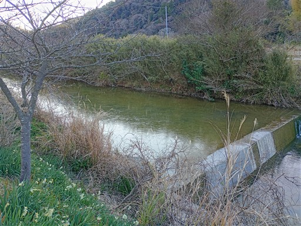
小保田バス停に到着。かわいらしいバス停だ。
ここで左折して嵯峨山への道に入って行く。
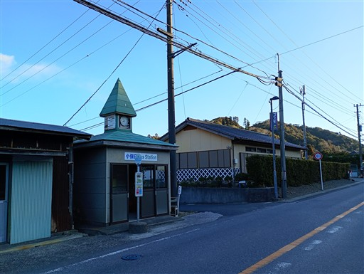
細い道を歩いていく。周囲はスイセン畑だ。
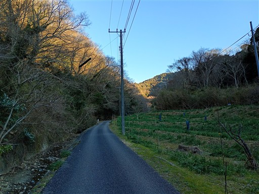
駐車場に到着。何台か車が停まっている。
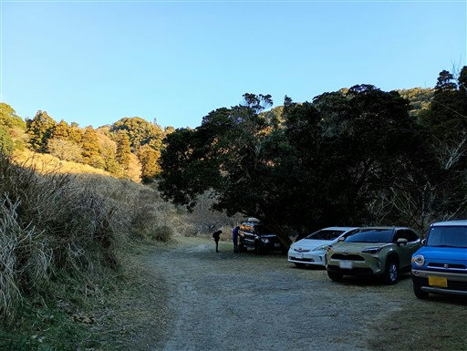
ここから登山道だ。
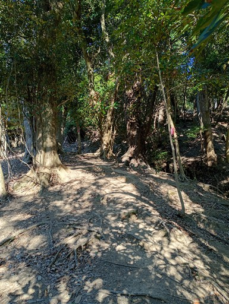
一登りで小保田峠に到着。
嵯峨山と小鋸山の分岐点だ。ここから嵯峨山を往復する。
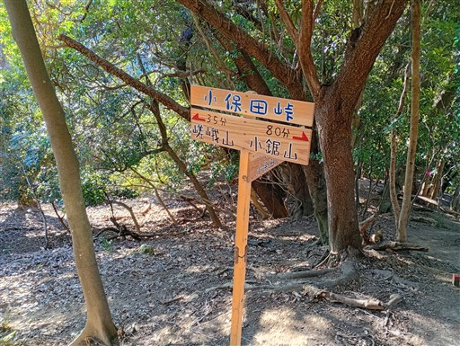
自然林が広がる美しい尾根道。大木も見られる。
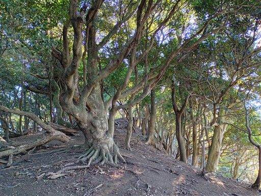
思った以上に痩せ尾根だ。
14年振りの訪問だが、こんな道だったか、あまり記憶にない。
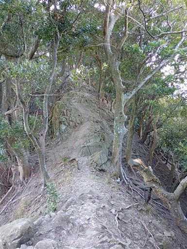
木の葉が窓枠のようだ。その向こうに房総の山々が見渡せる。
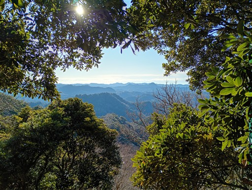
スイセンピークに到着。
以前はスイセンの花が多く咲いていたような記憶があるのだが、
登山口からここまで全くスイセンは見当たらない。
スイセンは一体どこに行ってしまったのだろう？
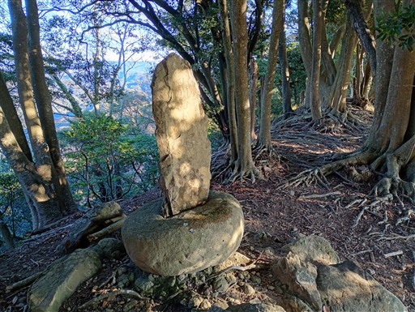
アップダウンのある尾根道。
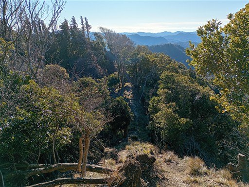
展望が広がる場所に到着。
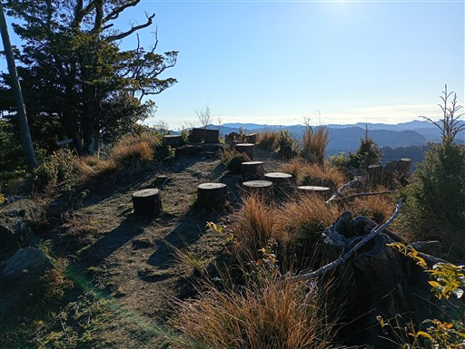
素晴らしい展望が広がる。房総の目立たない山々だ。
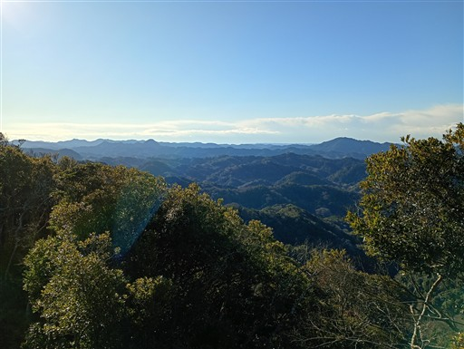
嵯峨山山頂に到着。標高315m。
この山頂からは展望が広がらない。
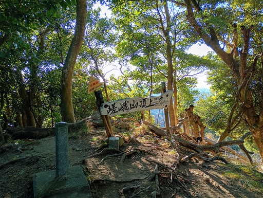
別の方向に展望スポットがあるとの標識があり気になるが、
予定ルートと異なるので元来た道を引き返す。
鋸山まで歩けば展望がいくらでも広がるだろう。
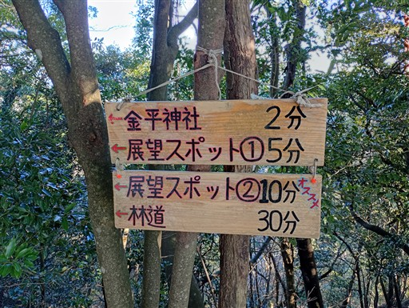
分岐点まで戻ると、小鋸山に向けて歩を進める。
見えているのは鋸山。意外に立派な山容だ。
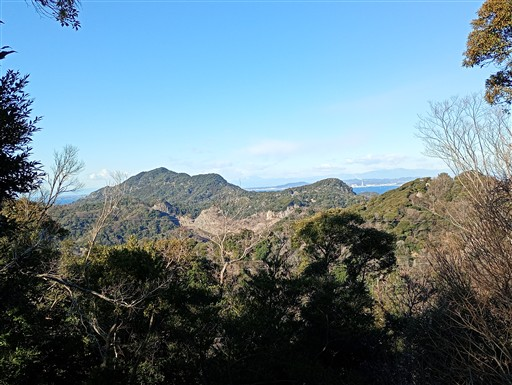
尾根道は小刻みなアップダウンが繰り返される。

滑りやすい急斜面の下り。
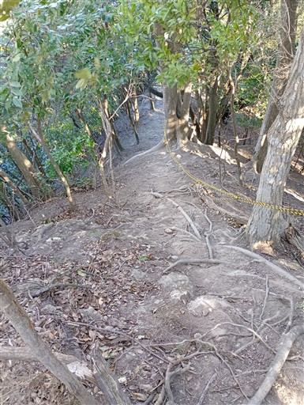
房総の山らしい樹林帯が広がっている。
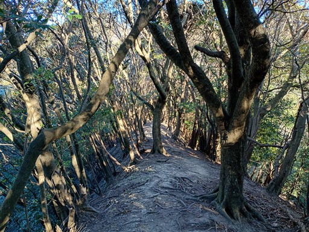
今度は滑りやすい斜面の登り。
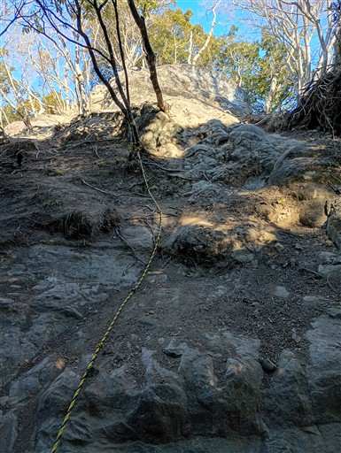
岩尾根を登る。

歩いてきた複雑な尾根を振り返る。
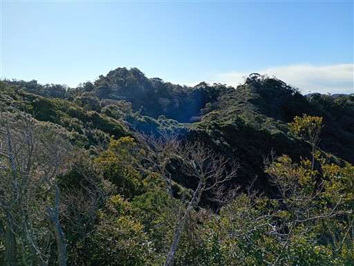
樹林帯を抜けて、急に視界が広がる。
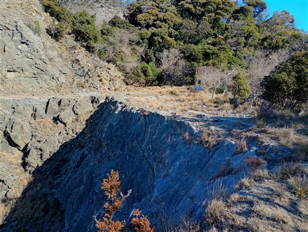
目の前に広がる渓谷がグランドキャニオンっぽい景色だと思ったら、
チバンドキャニオンと名付けられているらしい。
自然の渓谷ではなく、人の手で削られたもののようだ。
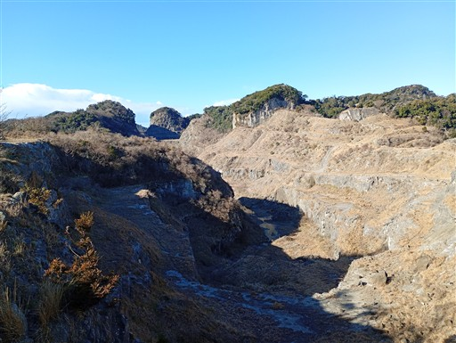
岩を削って造られた道を歩く。
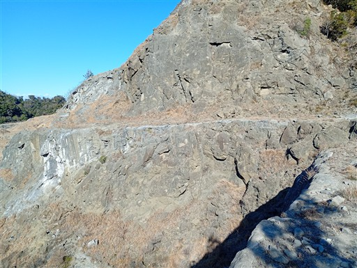
渓谷に沿って道は続く。正面左が目指す小鋸山だ。
これまであまり見たことがない不思議な景観だ。
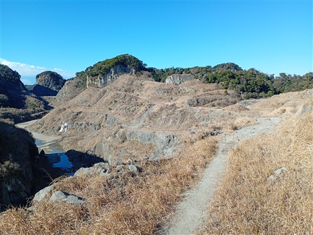
白狐峠に到着。目の前の水たまりはサンショウウオ池と標識に書かれているが、
サンショウウオが住んでいるのだろうか？
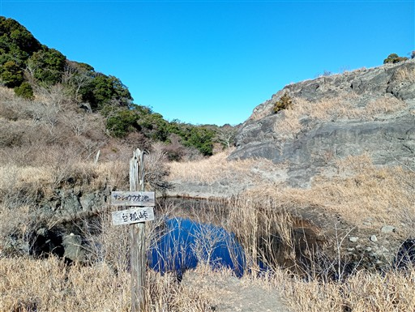
側にあったテーブルマウンテンに登る。
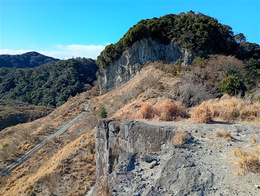
テーブルマウンテンからチバンドキャニオンを眺める。
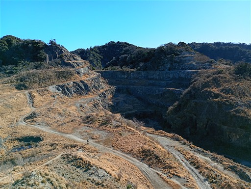
下流方面の景色。
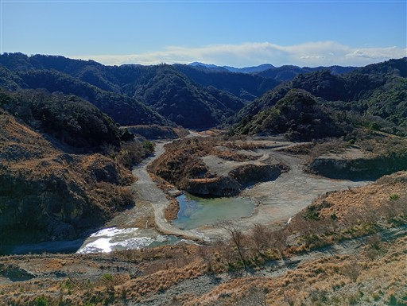
テーブルマウンテンを後にして、正面の小鋸山を目指す。
岩壁が見えるが、登山道は右から回り込んでいる。
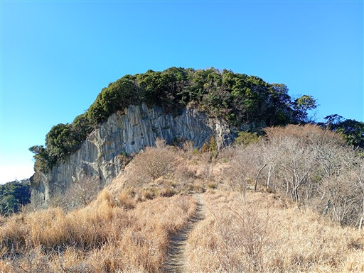
ものすごく急斜面の登山道だ。
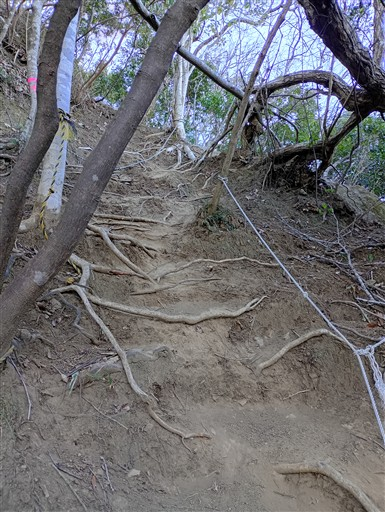
最後は岩場。
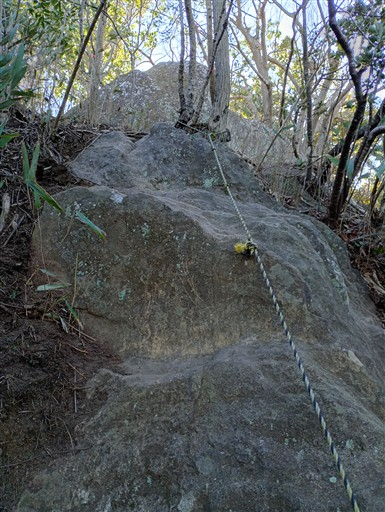
小鋸山の山頂に到着する。標高196m。
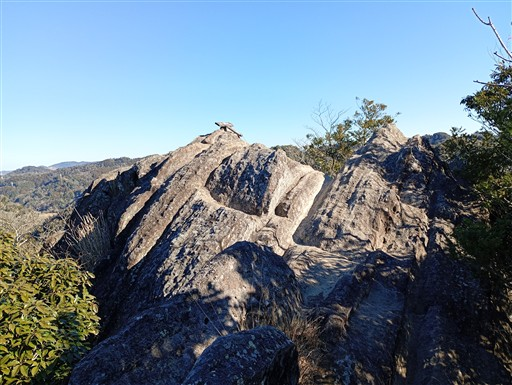
山頂標識が置かれている。どこかに飛んでいかないように、岩とロープで結ばれている。
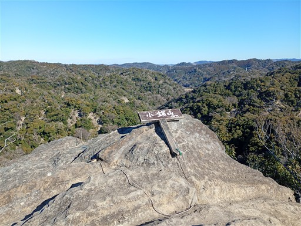
展望の良い山頂だが、景観はテーブルマウンテンと大差ない。
目指す鋸山が見えている。
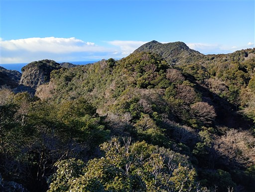
山頂を出発。ここからは登山道でないルート。
最初はすごく細い岩尾根だ。
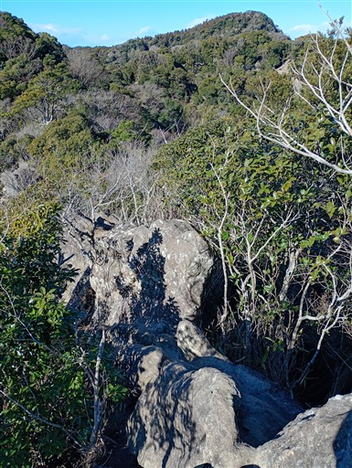
岩場を登る。非常に楽しい登山道だ。
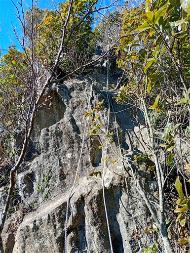
切り通し。
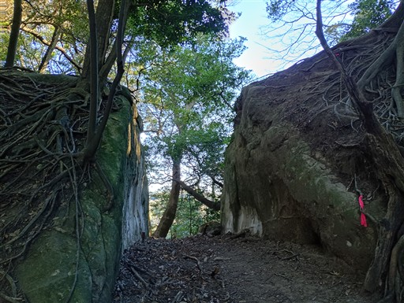
登山道ではないはずだが、迷いやすそうな尾根にはロープが張られていて結構整備されている。
そして人通りも結構多い。
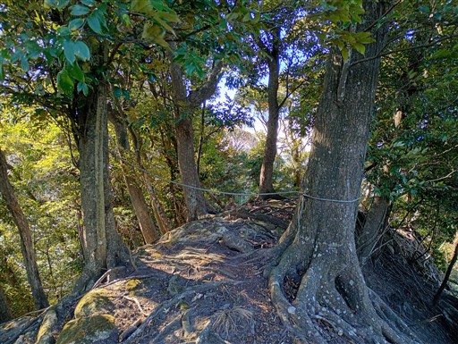
岩尾根を登る。
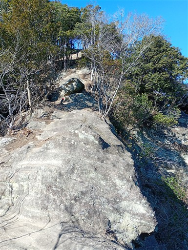
骨の関節のような形の木。
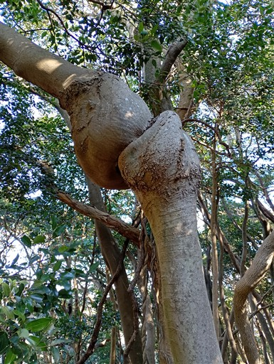
林道に出てくる。難易度の高い区間はここまでだ。
やたら立派な林道開通記念碑が置かれている。
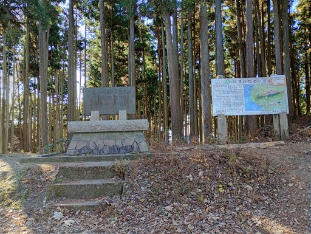
しかし、片側は崩落のため通行止めのようだ。
再開されることはあるのだろうか？
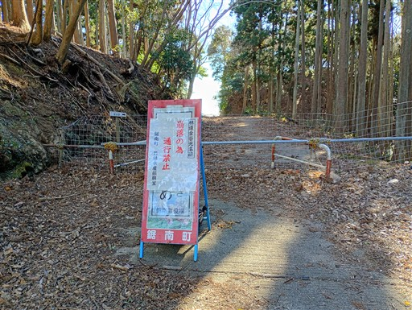
ここからは歩きやすい登山道。
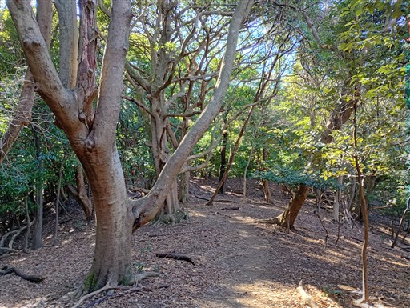
先ほどの渓谷の先にある池が見える。
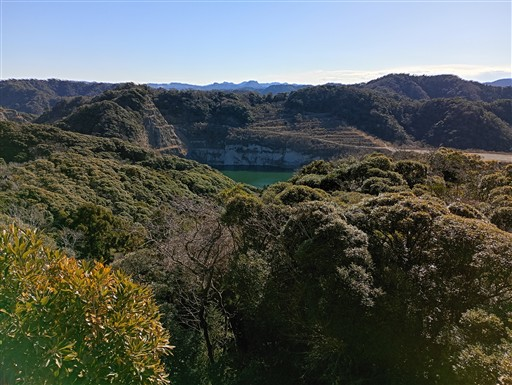
登山道は階段が多くなる。
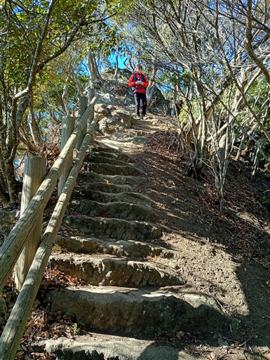
鋸山に到着。標高329m。
10年振り3度目の訪問だ。
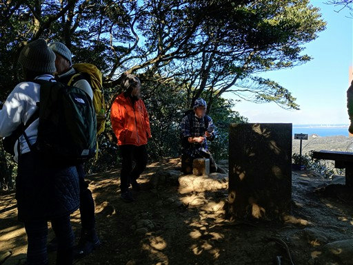
小さな山頂標識がある。
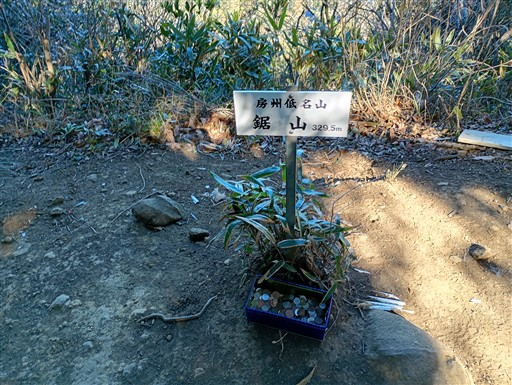
展望は一角のみ広がる。
狭い山頂だが、ここで軽くおやつ休憩をとる。
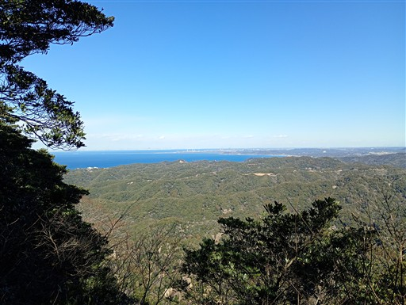
続いて展望台に移動。こちらの方が展望が良いが、大混雑だ。
こんなに人が多い鋸山は初めてだ。
ここからは素晴らしい景観が広がる。一面真っ青な海だ。
鋸山の稜線。白い建物はロープウェイ山頂駅だろう。
ここからは、石が削られた急な階段が続く。
一段一段が大きく、膝への負担が大きい。

石切り場跡に出てくる。
まるで巨大迷路のような景観だ。
石が切られた跡。テトリスのブロックが並んでいるようだ。
地獄覗きを見上げる。
石切り場跡をしばらく散策する。
石の壁に囲まれた特異な景観だ。
放置された重機は完全に錆びついている。
石壁の中腹の小さな隙間に森ができている。
高い壁に囲まれたこの場所は空が狭いからか、GPSが結構乱れる。
これは何に使われた道具だろう？
再び石の階段を登る。登ったり下りたり、結構重労働だ。
ラピュタの壁と呼ばれる場所に到着。
100m近い巨大な石壁と、その向こうに青い海、そして富士山が見える。
ここから日本寺境内に入る。鋸山の南側に下るには境内を経由する以外に道はない。
料金は700円。
せっかくなので観光してから下山することにする。
まず目を引くのが百尺観音。高さ30mの摩崖仏だ。
観光客の数は多い。かなりの賑わいだ。
足を延ばして十州一覧台に行く。
東京湾の入口部分。奥に見えているのは三浦半島だ。
大きな船が行きかっている。
続いて地獄覗きを訪問。
突き出た岩の上が展望台（というか写真スポット）になっている。
少し順番待ちの列ができている。
以前行ったことがあるので、今回はスキップ。
先端まで行っても空中にいる感じはあまりしない。
柵がなければもう少し価値のある場所になったかも。
よく似た展望台がもう1つある。
ここからも広がる景色は素晴らしい。
展望台から眺める地獄覗き。
真下をのぞき込む。垂直に切られた石なので、真下までよく見える。
この岩の上が、日本寺境内の中の山頂とされているようだ。
もちろん、ここからも素晴らしい景色。

景色を堪能したら下山を開始する。この先もいろいろ見所がある。
東海千五百羅漢。多くの石仏が並んでいる。
岩のトンネルを潜る。
ずっと続く階段道。ここも膝に悪い。
日本寺大仏に到着。東大寺の大仏をしのぐ大きな石仏だ。
ここも観光客で賑わっている。ここ最近、人気の観光地になっているのだろう。
薬師本殿。2007年に再建されたもの。
法堂に向かう階段は影が稲妻模様になっている。

日本寺法堂。パンフレットには法堂と書かれているが、
Webページには法堂（本堂）と記載されている。
ここが日本寺の中心地と思われるが、ほとんど人影はない。
2011年にこの地を訪れた時にはこの建物はなく、最近復興したもののようだ。

仁王門も新しくなっている。
仁王像は以前の姿のままだ。
参道を下っていく。この辺りは全く人通りがない。
参道は途中で通行止め。迂回路の車道に回されてしまう。
あとは車道を下っていく。
この辺りにも石切り場っぽいものが見られる。
JR内房線。単線だ。
のどかな線路脇の細道を歩いていく。
いくら何でも竹が密集しすぎだろう。
スイセンの花が咲いている。嵯峨山であまり眺められなかったので、ここでゆっくり観賞する。

道の駅 保田小学校に戻ってくる。
昼食は保田食堂で。
食後は見学を行う。学校を改装してできた道の駅で、校内を見学できる。
宿泊施設もある。部屋の名前は「5年2組」というような教室名になっている。
体育館は売店。お土産を買って帰宅する。
本日のルートは見所の多いルートだった。
嵯峨山～小鋸山～林道はアップダウンの多い痩せ尾根で、歩いていて楽しい道だった。
途中にあるチバンドキャニオンは、特異な景観が広がる不思議な空間。
そして、最後は鋸山周辺の石切り場、絶景、大仏などの観光地。
保田小学校の見学も含めて、充実した一日となった。